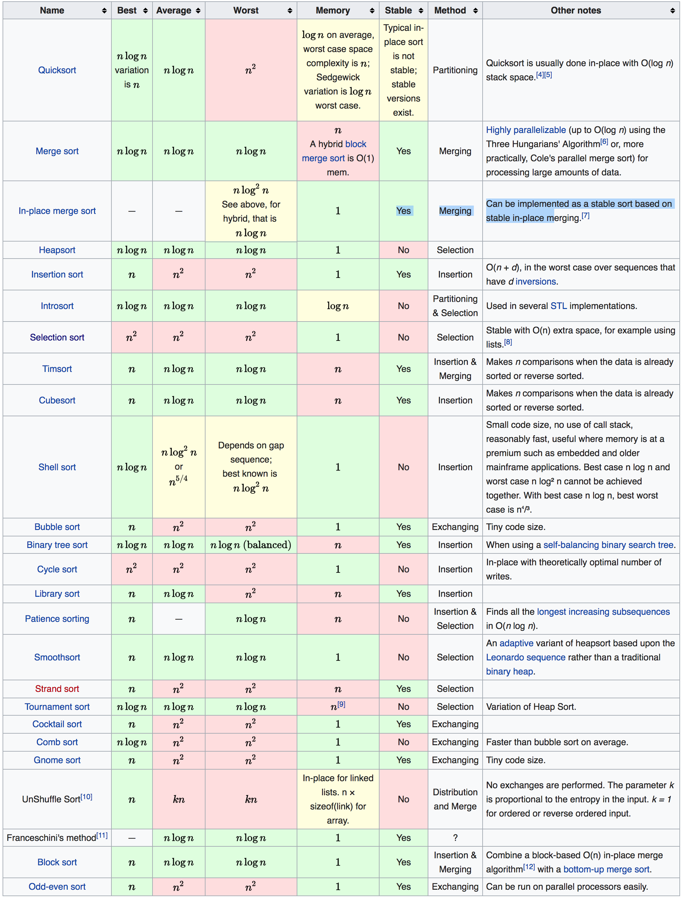
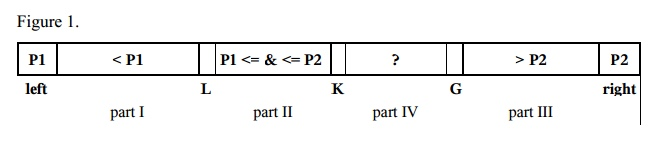

Sorting Algoritm Complexity

Quicksort
1. Animation

2. Basic Ideas
- divide and conquer, pivot, shuffle
- Advantage: quick
- Disadvantage: not stable, space complexity is log(n) on average, worst time complexity is O(n^2)
3. Implementation
public static void quickSort(Comparable[] a) {
quickSort(a, 0, a.length - 1);
}
private static void quickSort(Comparable[] a, int lo, int hi) {
if (hi <= lo) return;
int i = partition(a, lo, hi);// do the partition
quickSort(a, lo, i - 1); // sort left part
quickSort(a, i + 1, hi); // sort right part
}
private static int partition(Comparable[] a, int lo, int hi) {
// Partition into a[lo..i-1], a[i], a[i+1..hi].
int left = lo, right = hi + 1;
Comparable t = a[lo];
while (true) {
// scan from right to find the first one that is smaller than t
// we should make sure that right must be a number less than or equal to lo
while (t.compareTo(a[--right]) < 0) if (right == lo) break;
// scan from left to find the first one that is larger than t
while (t.compareTo(a[++left]) > 0) if (left >= right) break;
if (left >= right) break;
// swap left and right
swap(a, left, right);
}
swap(a, lo, right);
return left;
}
private static void swap(Comparable[] a, int left, int right) {
Comparable temp = a[left];
a[left] = a[right];
a[right] = temp;
}
Dual-pivot quick sort
- For small arrays (length < 17), use the Insertion sort algorithm.
- Choose two pivot elements P1 and P2. We can get, for example, the first element a[left] as P1 and the last element a[right] as P2.
- P1 must be less than P2, otherwise they are swapped. So, there are the following parts:
- part I with indices from left+1 to L–1 with elements, which are less than P1,
- part II with indices from L to K–1 with elements, which are greater or equal to P1 and less or equal to P2,
- part III with indices from G+1 to right–1 with elements greater than P2,
- part IV contains the rest of the elements to be examined with indices from K to G.
- The next element a[K] from the part IV is compared with two pivots P1 and P2, and placed to the corresponding part I, II, or III.
- The pointers L, K, and G are changed in the corresponding directions.
- The steps 4 - 5 are repeated while K ≤ G.
- The pivot element P1 is swapped with the last element from part I, the pivot element P2 is swapped with the first element from part III.
- The steps 1 - 7 are repeated recursively for every part I, part II, and part III.
Merge Sort
1. Animation

2. Basic Ideas
- Merge sort takes advantage of the ease of merging already sorted lists into a new sorted list
- Advantage: Stable, worst time complexity is O(n log n)
- Disadvantage: O(n) space complexity
3. Implementation
public static void mergeSort(Comparable[] a) {
Comparable[] arr = new Comparable[a.length];
mergeSort(a, arr, 0, a.length - 1);
}
private static void mergeSort(Comparable[] a, Comparable[] arr, int lo, int hi) {
if (hi <= lo) return;
int mid = (hi + lo) / 2;
mergeSort(a, arr, lo, mid);
mergeSort(a, arr, mid + 1, hi);
merge(a, arr, lo, mid, hi);
}
private static void merge(Comparable[] a, Comparable[] arr, int lo, int mid, int hi) {
int left = lo, right = mid + 1;
// copy to arr
for (int i = 0; i < a.length; i++)
arr[i] = a[i];
// merge
for (int i = lo; i <= hi; i++) {
if (left > mid) a[i] = arr[right++];
else if (right > hi) a[i] = arr[left++];
else if (arr[left].compareTo(arr[right]) > 0) a[i] = arr[right++];
else a[i] = arr[left++];
}
}
Heapsort
1. Animation

2. Basic Ideas
- Min heap & Max heap, finding the next largest element takes O(log n) time
- Advantage: O(n log b) time complexity, O(1) space complexity
- Disadvantage: not stable, need to create a heap
3. Implementation
// a[i - 1] is the parent of a[2 * i - 1] and a[2 * i]
public static void heapSort(Comparable[] a) {
int len = a.length;
for (int i = len / 2 - 1; i > 0; i--)
sink(a, i, len);
while (len > 1) {
swap(a, --len, 0);
sink(a, 1, len);
}
}
// sink from root to end
private static void sink(Comparable[] a, int root, int end) {
while (2 * root <= end) {
// find the larger child
int child = 2 * root;
if (child < end && a[child - 1].compareTo(a[child]) < 0) child++;
// if the larger child is smaller, break
if (a[child - 1].compareTo(a[root - 1]) < 0) break;
// swap the parent and larger child
swap(a, root - 1, child - 1);
// go to next layer
root = child;
}
}
private static void swap(Comparable[] a, int left, int right) {
Comparable temp = a[left];
a[left] = a[right];
a[right] = temp;
}
Insertion Sort
1. Animation

2. Basic Ideas
- Insertion sort is a simple sorting algorithm that is relatively efficient for small lists and mostly sorted lists, and is often used as part of more sophisticated algorithms
- It works by taking elements from the list one by one and inserting them in their correct position into a new sorted list
- Advantage: Stable, works well for small lists, O(1) space complexity
- Disadvantage: O(n^2) worst time complexity
3. Implementation
public static void insertionSort(Comparable[] a) {
int len = a.length;
for (int i = 1; i < len; i++) {
for (int j = i; j > 0 && a[j].compareTo(a[j - 1]) < 0 ; j--)
swap(a, j, j - 1);
}
}
private static void swap(Comparable[] a, int left, int right) {
Comparable temp = a[left];
a[left] = a[right];
a[right] = temp;
}
Selection Sort

Bubble Sort

Bucket Sort

LSD Radix Sort